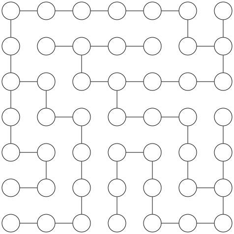
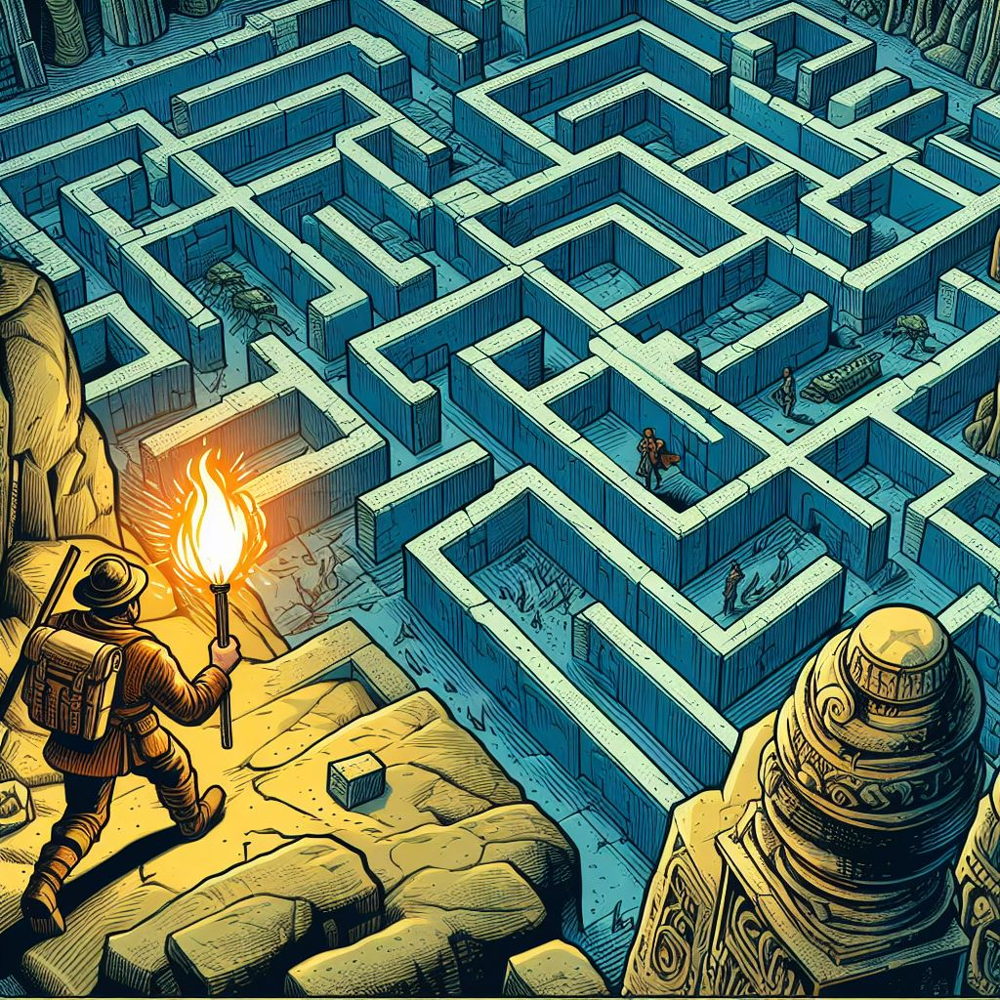
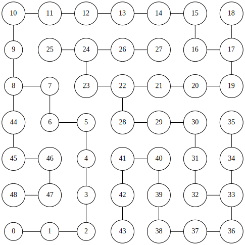

2 The Minotaur’s Labyrinth

Ariadne was an explorer who loved to seek out ancient mysteries and hidden secrets. She had heard of a legendary labyrinth in Crete, where a fearsome beast called the Minotaur lurked. Many brave adventurers had entered the maze, hoping to slay the monster or find the treasure hidden within, but none had ever returned.
Ariadne was not afraid, for she was well-versed in the arcane knowledge of graph traversal algorithms! She knew she had two options: going depth-first or breadth-first, and she was debating what was her best chance.
Going depth-first would mean walking deep into the maze for as long as possible, until she would hit a wall, and then backtrack her steps to find an alternative route. Going breadth-first was just the opposite, she would peek at each possible way just long enough to reach the next intersection, carefully marking the walls of the already explored paths –all adventurers travel with a bag full of chalk, you know?.
Depth-first was potentially faster, but could lead here right into a deadly trap or get her stuck in a loop if she wasn’t paying attention. Breadth-first was safer but extremely painstaking. So she decided to go in depth, as it would allow her to go deeper into the maze and find the most interesting paths. She hoped to find the Minotaur’s lair and then exit, before her bag of chalks ran out.
However, she soon realized that the labyrinth was more complex and dangerous than she had imagined. It was full of traps, dead ends, and loops. She also heard the Minotaur’s roars getting closer, as it followed her scent. She wondered if she had made a mistake by choosing depth-first exploration, but it was too late to switch. Now all she could do was hope to find the exit before the Minotaur could found her.
Will Ariadne escape the labyrinth, or will she face her doom like all previous adventurers? Is depth-first the best option for her exploration, or could she have tried a different algorithm? Let’s find out!
Modelling the labyrinth
The first step in solving any problem with graphs is, well, turning that problem into a graph problem!
In this case, what we must do is find a way out of the labyrinth, so we must decide how to model the labyrinth as a graph such that nodes and edges map to concepts in the labyrinth that are useful for this task. Since this is our first encounter with graph problems, this will not prove difficult. The most natural mapping, and the one you’re probably thinking about, is using edges to model the corridors in the labyrinth, and nodes to model the intersections.
A possible graph that models a labyrinth is the following:
In this model, the solution to our problem –finding a way out of the labyrinth– translates into finding a sequence of nodes, each adjacent to next, that take us from the start 0,0 to the end 6,6.
Let’s begin by formalizing this notion of “walking” through the graph, and then review the most important algorithms that will free Ariadne from the Minotaur.
Walking through a graph
The most important structure in a graph is a sequence of connected vertices. This is called a walk in the general case, where the only restriction is that between any pair of consecutive vertices there is an edge. For example, \(a,b,a,e,c,d\) is a valid walk in our example graph, that happens to go though all vertices, but this, of course, isn’t necessary. Notice that we can move over the same edge back and forth as we want, so we can extend any walk infinitely.
If we never repeat an edge, either backtracking or by making a loop, then we have a trail. The previous walk is not a trail because we backtrack through \(ab\). In contrast, \(a,b,e,d, e\) is a valid trail in our example graph, because although \(e\) appears twice, we get to it via different edges each time.
Finally, if we also never repeat a vertex, then we have a path (some literature will use path to refer to what we call a trail, and simple path to refer to a path with no repeated vertices). In our example graph, \(a,b,d,c,e\) is a path that happens to involve all vertices. If, like in the previous case, the path can loop over from the final vertex back into the first one, then we call it a cycle.
All trails contain a path
You might have noticed that the difference between trails and path is that trails can have small sub-cycles inside them. Intuitively, every time we find one such cycle, we can skip it and continue directly in the “main path”. Thus, it makes sense to think that we can always remove all detours from a trail and extract a path that begins and ends in the same vertices.
If we can get from \(a\) to \(b\) at all, then we must be able to get from \(a\) to \(b\) without making any unnecessary loops, right? The answer is yes, of course. This is our first theorem, and one we will use often in the rest of the book.
Theorem 1: In any graph \(G\), if there is a trail from \(a\) to \(b\), then there is a path from \(a\) to \(b\).
Proof: Here is one intuitive, but rigorous demonstration for Theorem 1. We will use something called the well-ordering principle1, a fundamental axiom of natural numbers that basically says, if you have a non-empty set of discrete things that have some property you can use to compare them –like a size–, there is one them that is the smallest.
In this case, we will consider the set of all possible trails between \(a\) and \(b\). Since, by the condition of the theorem, there exists a trail from \(a\) to \(b\), we know this is a non-empty set. Then we can invoke the well-ordering principle and ask for the smallest possible such trail. Our claim, is that the shortest trail between \(a\) and \(b\) must be a path. Why? Here we will use another fundamental tool of logical reasoning: proof by contradiction2.
Suppose the shortest trail between \(a\) and \(b\) is not a path. Then, it must contain some internal loop, for otherwise it would be a path and the proof would be done. Thus, if it contains a loop, we can make the trail shorter by removing that loop, and it will still fo from \(a\) to \(b\). This is in contradiction with the claim that we had the shortest possible trail. Thus, by reductio ad absurdum, the shortest trail must be a path.
The proof is almost complete. The only step we slightly overlooked is the claim that the existence of a loop implies that we can make the trail shorter. To airtight this part of the proof, we need to show how to actually construct that shortest trail.
Let \(P=a \rightarrow^n b\) be the shortest trail between \(a\) and \(b\), with length (number of edges) \(n=|P|-1\). Assume this trail has a loop, thus, there is some vertex, call it \(x\), that appears twice inside the trail (\(x\) could very well be \(a\), or \(b\), but for the sake of generalization we can assume it’s somewhere inside). Thus, the \(P\) trail actually looks like this:
\[P=a \rightarrow^{k_{1}} x^{(1)} \rightarrow^{k_{2}} x^{(2)} \rightarrow^{k_{3}} b\]
where \(x^{(i)}\) indicates the \(i\)-th time the vertex \(x\) appears, and \(k_{1}+k_{2}+k_{3}=n\), with \(k_{1}\geq 0\), \(k_{2}> 0\), and \(k_{3} \geq 0\). That is, the part between \(x^{(1)}\) and \(x^{(2)}\) must have at least one edge (in fact, it must have at least length \(2\), but we don’t need that).
Now we need to construct a valid trail from \(a\) to \(b\) that is strictly smaller than \(n\). We can make a trail by going from \(a\) to some vertex \(v\) and then from \(v\) to \(b\). In trail \(P\) we have two trails \(a \rightarrow^{k_1} x\) and \(x \rightarrow^{k_2} b\) that we can stitch together and make a new trail \(P’ = a \rightarrow^{k_1+k_3} b\), where the length of \(P’\) (equal to \(k_1+k_3\)) must be strictly less than \(n\) because \(k_2 > 0\). \(\blacksquare\)
Graph traversal
The simplest procedure in graphs that involves some notion of “walking” is graph traversal. This is the task of enumerating all nodes in a predefined order by moving through the edges. That is, we don’t want to simply list all nodes –that is trivial– but to do so in a way that uses the graph structure, such that adjacent nodes are considered next to each other.
There are two basic graph traversal algorithms: depth-first search (DFS) and breadth-first search (BFS). Both algorithms are very similar, and will produce a full enumeration of a graph –assuming all nodes are reachable, which is a question we’ll answer next chapter. They differ in how they prioritize being eager versus being comprehensive.
Abstract traversals
We will begin by defining how our abstract notion of “search” looks like. To keep things simple, we assume a search algorithm provides a single method traverse that simply enumerates all edges in the order in which they are discovered.
class Search(Generic[T], ABC):
@abstractmethod
def traverse(self, graph: Graph[T], root: T):
pass
def nodes(self, graph: Graph[T], root: T):
return (y for (x,y) in self.traverse(graph, root))
# ... extra methods in Search
Note
The nodes method is just a thing wrapper around traverse that yields the nodes instead the full edges.
Why make this a class? Isn’t this just a method? Well, it’s a bit of mouthful at the moment, for sure. But later, as we explore many search strategies, we’ll want to compare different search strategies, and it will become useful to have a class for each of them.
Plus, this abstract method allows us to implement a very common search pattern that we will reuse over and over: searching for an specific set of nodes (or a single node). We can have the general-purpose case that matches any node with a given property, and the special case when we need to find one particular node –e.g., like the exit of the labyrinth.
# class Search(...)
# ...
def find_any(self, graph: Graph[T], origin: T, goal: Callable[[T], bool]):
for node in self.traverse(graph, origin):
if goal(node):
return True
return False
def find(self, graph: Graph[T], origin: T, destination: T):
return self.find_any(graph, origin, goal=lambda n: n == destination)With this code in place, we’re ready for some actual search algorithms.
Depth-first search
As the name implies, depth-first search (DFS) is a graph traversal algorithm that prioritizes going as deep as possible as fast as possible. In our labyrinth analogy, this means walking down a corridor till you can’t go any further, and only then, when you reach a dead end, you backtrack and try a different route.
More precisely, DFS starts at an arbitrary root node in a graph, and successively jumps to one of its neighbors, and continues from there. You can select which neighbor to visit randomly, but most commonly one simply defines a predefined order –e.g., the same order in which neighbors are listed in the adjacency list. In a practical scenario, like our labyrinth, this could mean, for example, always trying to move south, then east, then north, then west. Of course, you must keep track of which nodes (or intersections in the labyrinth) you have already visited, otherwise you can easily get stuck in a loop.
This is how DFS looks like in our sample graph that models the labyrinth problem.

Understanding this image
In the previous image, we label each node with a number that indicates the order in which it is discovered by DFS. Thus, nodes that have consecutive numbers indicate that DFS traveled along that path. When you see two adjancent nodes with non-consecutive numbers, that means DFS backtracked to that node after getting stuck, and took a different path.
Programming DFS
Now let’s implement DFS. The easiest implementation is using recursion: we start at the root node and recursively visit all non-visited neighbors. To make sure we don’t get stuck in a loop, we can use a set to keep track of visited nodes throughout all the recursive calls. Each iteration, we return the edge \((x,y)\) where \(y\) is the current node under consideration, and \(x\) is the “parent” node –that we must also keep track of during recursion.
Here is the full implementation:
class DFS(Search[T]):
def traverse(self, graph: Graph[T], root: T):
return self._dfs(graph, root, None, set())
def _dfs(self, graph: Graph[T], current: T, parent:T, visited: Set[T]):
yield parent, current
visited.add(current)
for node in graph.neighborhood(current):
if node in visited:
continue
yield from self._dfs(graph, node, current, visited)As it’s common in recursive methods, we have a public “portal” method that exposes the public arguments, which in turn defers to a private implementation that takes any additional arguments we need for bookkeeping.
Breadth-first search
Programming BFS
Finding your way out
Computing paths
While knowing that a goal node exists is useful, we often want to find the actual path that takes us there. Fortunately, our abstract Search strategy can implement this operation easily using the parent -> node information available in each iteration in the traverse method.
To quickly compute paths, we can define a simple structure (Paths) that stores a reference to the parent of each node found during search. With this information, the path between our origin vertex and an arbitrary destination is easy to compute by following the links backwards. That is, we start at the destination node, and iteratively add the parent node to a list, until we find the origin node. Then, we simply reverse the list.
class Paths(Generic[T]):
def __init__(self, origin:T) -> None:
self._parents = {}
self.origin = origin
def add(self, node, parent):
if node in self._parents:
raise ValueError("Node already exists")
self._parents[node] = parent
def path(self, destination) -> list[T]:
path = [destination]
node = destination
while node != self.origin:
node = self._parents[node]
path.append(node)
path.reverse()
return path
Paths are origin-dependent
You’ll notice we don’t require an origin parameter in the Paths.path method. That is because this structure holds paths precomputed from a fixed origin node, that is, the node from which the search algorithm started.
If you need to precompute paths for arbitrary pairs of nodes, there is little you can do other than using a Path instance for each origin node.
With this structure in place, we can add a method to the Search class to compute all paths for a given graph and origin.
# class Search(...)
# ...
def compute_paths(self, graph: Graph[T], origin:T) -> Paths[T]:
paths = Paths(origin)
for parent, node in self.traverse(graph, origin):
paths.add(node, parent)
return pathsOther graph traversal strategies
Random walk
Bidirectional search
Final remarks
DFS and BFS are the two cornerstones of graph search. Almost all algorithms in this book will either include one of these as an explicit step, or use them as building block.
See https://en.wikipedia.org/wiki/Well-ordering_principle.
Technically, we don’t need the full well-ordering principle in this proof because we have a finite set of things, so of course one of them must be the smallest. The well-ordering principle applies also to infinite sets, which is where it becomes really handy.↩︎
https://thepalindrome.org/p/proof-by-induction-and-contradiction↩︎